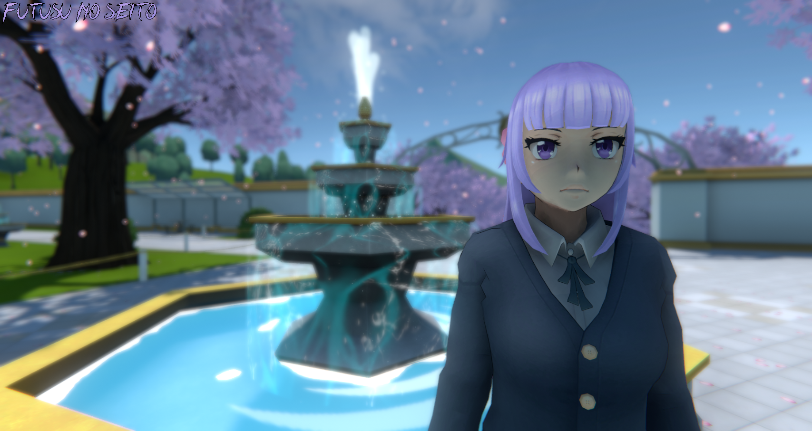

Hello! This is the first release of Futusu no Seito and it's website! (yay!) I've also uploaded a build of the game, so now i'm going to list some features the game contains!
Please remember that this will not depict what the final game will be/look like. I plan to vastly improve it's Code, Models, Graphics etc.
Hey this color is cool